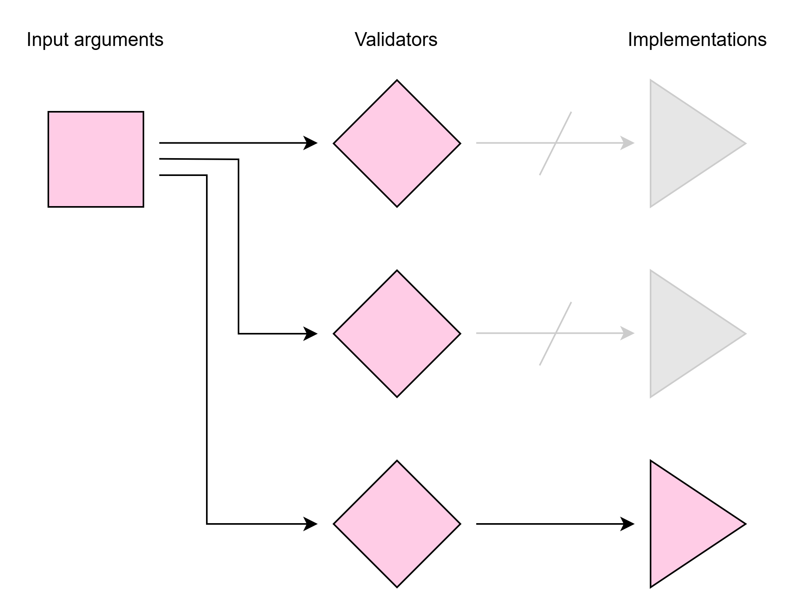

Dispatching
Dispatching pattern
argbox can be used for function dispatching. Dispatching is a pattern where you redirect a function call to a specific implementation based on validation of the input arguments (essentially to avoid bloated code with many if-else statements):

You can use the Context class to create dispatching functionality. However, due to the usefulness of this concept we have created specialized helper functions in argbox for the purpose.
Supported functions
Unlike many other dispatching libraries, here we supports all patterns of function definition and calling as described here, including positional arguments, keyword arguments, fixed number and variable number.
Built-in dispatchers
We have provided some built-in dispatchers for the most common use cases
(1) Dispatch on type
Dispatch based on the type of each the input argument.
@argbox.dispatch_on_type
def add(x, y):
...
@add.register(float, float)
def _(x, y):
return x + y
@add.register(str, str)
def _(x, y):
return f"{x} + {y}"
(2) Dispatch on rule
Dispatch based on checking a rule (i.e. a boolean-valued function) on each input argument:
@argbox.dispatch_on_rule
def abs(x):
...
@abs.register(lambda x: x >= 0)
def _(x):
return x
@abs.register(lambda x: x < 0)
def _(x):
return -x
Custom dispatcher
You can also build your own dispatcher using the following approach:
import numpy as np
# define your dispatcher
@argbox.dispatcher # (1)!
def dispatch_on_numpy_dtype(*kinds: str):
def validator(ctx: argbox.Context) -> bool: # (2)!
for i, kind in enumerate(kinds):
arg = ctx.get_arg(position=i)
if not np.isdtype(arg.dtype, kind):
return False
return True
return validator
# use your dispatcher on a function
@dispatch_on_numpy_dtype # (3)!
def add(x, y):
...
@add.register("numeric", "numeric") # (4)!
def _(x, y):
return x + y
@add.register(np.str_, np.str_) # (5)!
def _(x, y):
return np.apply_along_axis(' + '.join, 0, [x, y])
- Use the
dispatcherdecorator to define your own dispatcher. - Define the validator that is run upon a call to your function. When the validator returns
True, the associated implementation will be used. - Decorate a function using your dispatcher.
- Register an implementation for the function, which is used if the validator returns
True. - Register another implementation for the function, which is used if the validator returns
True.